kicad_firmware_generation
Christopher Besch • 18th February 2026
kicad_firmware_generation
Automatic Firmware Generation for Spaceflight Hardware based on Schematics
PLUTO: a Satellite
Credit: DLR
PCDU (Power Conditioning and Distribution Unit)
- Between solar arrays, battery and subsystems
- STM32 with firmware
- Important job: TMTC
Telemetry (i.e., current draw)
Telecommand (i.e., power up/down specific subsystem)
- Important job: TMTC
PCDU Development
- PCDUs for same satellite class do fundamentally same job
but, e.g., different voltage outputs (e.g., 12V vs 3.3V) - Snippet based (electrical) design
- Snippet: group of components with well-defined function (e.g., ADC)
- Design new PCDU using existing snippets
- Bottleneck: firmware development
- Design goal: speed up firmware similar to electrical design
→ "Automatic Firmware Generation for Spaceflight Hardware
based on Schematics"
- Design goal: speed up firmware similar to electrical design
KiCad Schematics
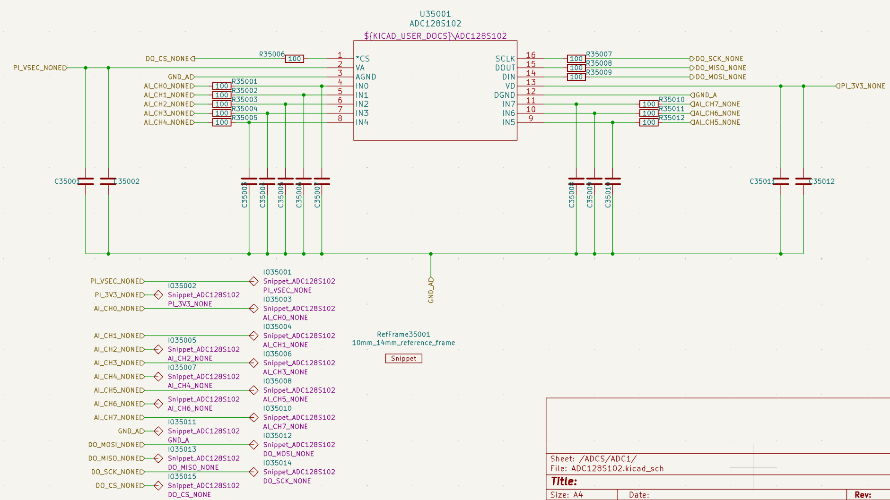
→ C++ Firmware
- Currently: firmware engineer manually reads schematics
Challenges
- How to get and understand hardware specification?
- How to generate C++ firmware?
- How to enrich data from schematics with other information?
(e.g., OS abstractions)
- How to enrich data from schematics with other information?
- How to make usable outside PCDU development?
- What information do other use-cases require?
Contribution
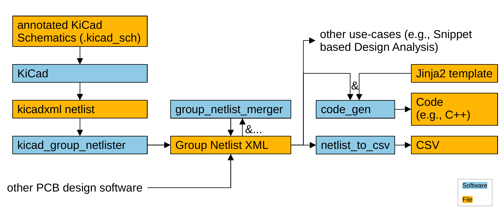
Tooling Overview (1)
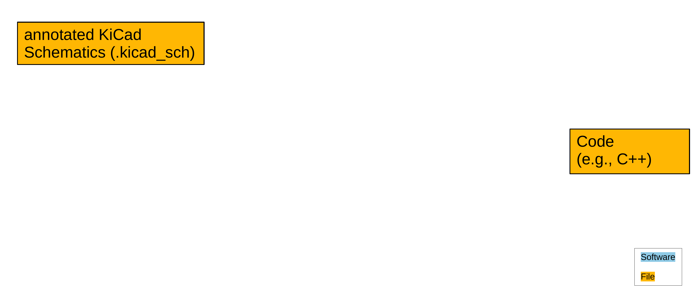
Tooling Overview (2)
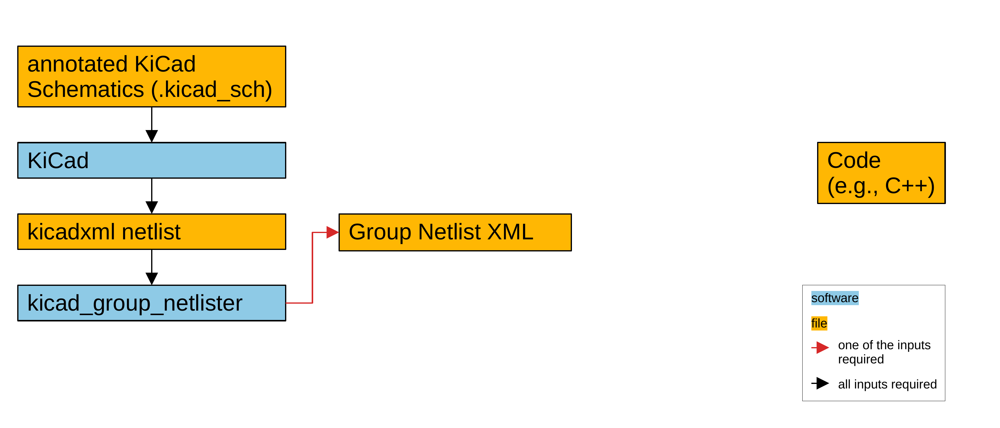
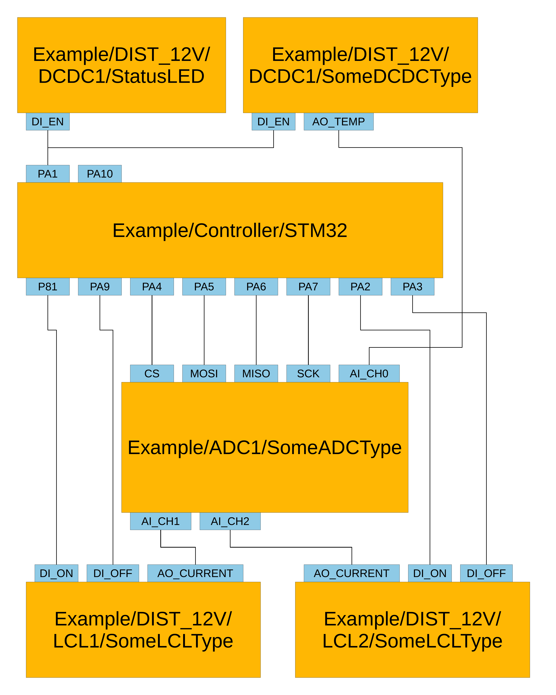
Group
- Collection of components
- With set of Pins
- Can be snippet (doesn't have to)
Group Netlist XML
- Abstract view on hardware (challenge: right degree of abstraction)
- Store Group connections
- With Python library (parse and provide different perspectives)
Tool 1: kicad_group_netlister
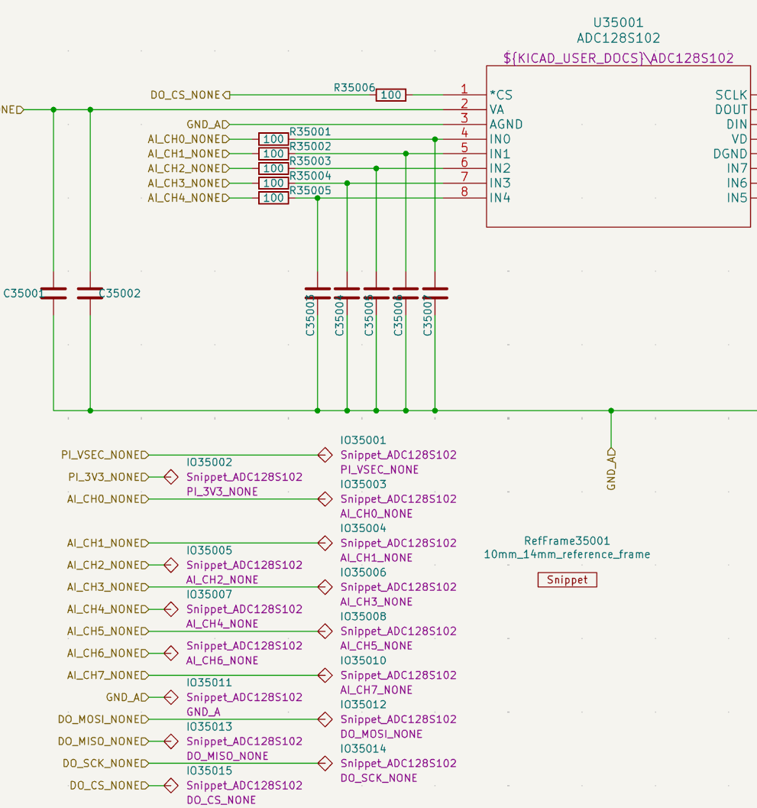
- Jobs:
- Group components
- Find connections
- KiCad netlist → Group Netlist
- Don't use schematics directly
- KiCad-CLI creates Netlist
- Circumvent tracing problem: Same behavior as KiCad
Group ID
ICA_EPS_Distribution/ADCS/ADC1/Snippet_ADC128S102
Schematic Sheet Path Group Type
Annotations (Group Type and Pin Name)

KiCad Sheet Hierarchy
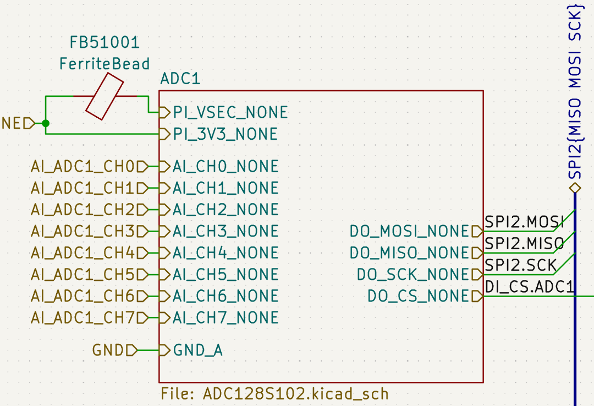
Tooling Overview (2)
Tooling Overview (3)
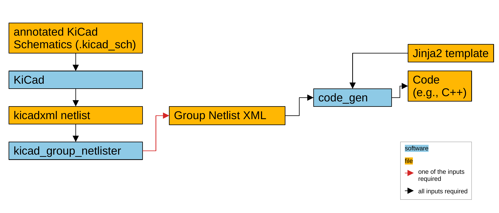
Tool 2: code_gen
- Read Group Netlist
(with Python library) - Pass info to Jinja2 template
→ Project specificities in template
→ Support arbitrary language
→ Open-Source tooling
Jinja2 Template
→ Output
Tooling Overview (3)
Tooling Overview (4)
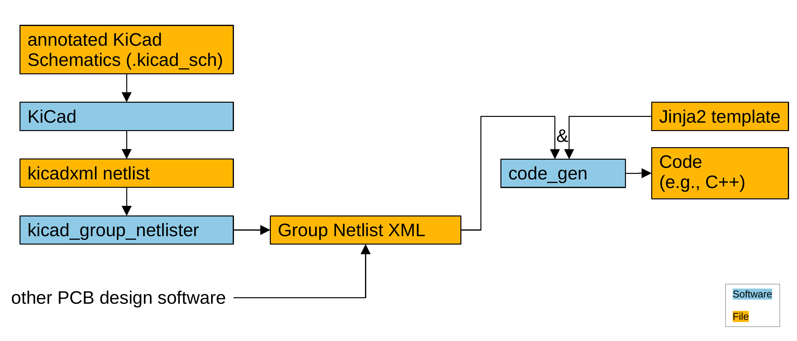
Tooling Overview (5)

Tool 3: netlist_to_csv
- Example use-case: harness specification
- Wiring between subsystems
- Create spreadsheet showing
- list of connectors
- connector types
- connector pinouts
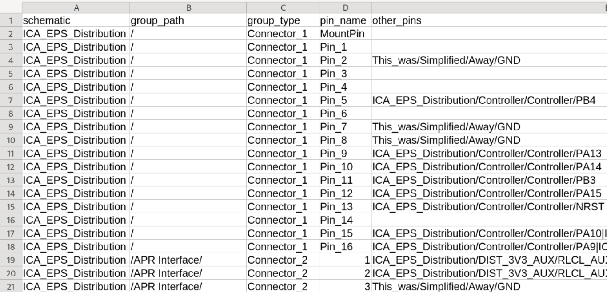
Tooling Overview (5)
Tooling Overview (6)
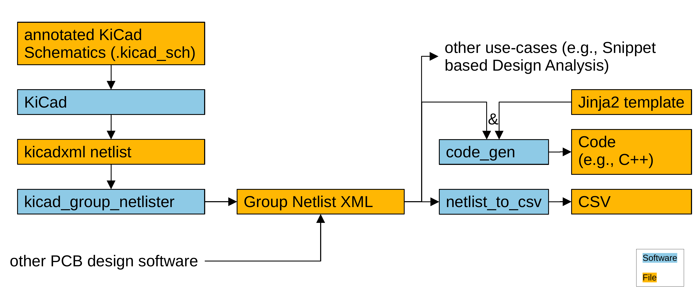
Tooling Overview (7)
Tool 4: group_netlist_merger
- Multiple PCBs with connectors
- Use:
- Generate Group Netlist for each PCB
- Specify connectors to connect → group_netlist_merger
- Use combined Group Netlist
e.g., firmware for combined hardware
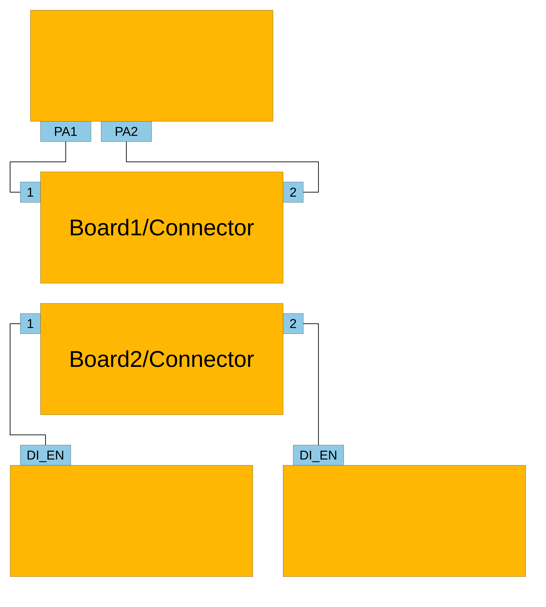
Tool 4: group_netlist_merger
- Multiple PCBs with connectors
- Use:
- Generate Group Netlist for each PCB
- Specify connectors to connect → group_netlist_merger
- Use combined Group Netlist
e.g., firmware for combined hardware
Integration in PCDU Design Process
- Generate hardware definition C++ header and LCL driver firmware
→ Found error in hardware - Generate spreadsheet harness specification
Quantitative Evaluation
- Lines of code:
Group Netlist library 414 kicad_group_netlister 426 code_gen 118 netlist_to_csv 169 group_netlist merger 185 Snippet based design analysis 65 - Asserts: 160
- PLUTO's PCDU: 1.7s (sum of all tools; component count: 2494)
- Synthetic benchmark: 120 tests
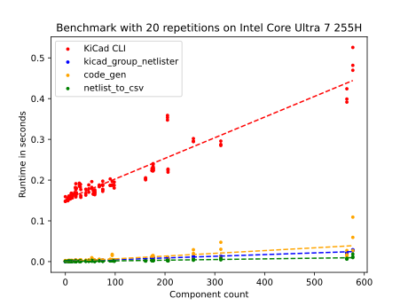
- KiCad Netlist
→ solve tracing problem - Intermediate format
→ unlocks use-cases - Jinja2 → Open-Source
Appendix
Development Process
State 1
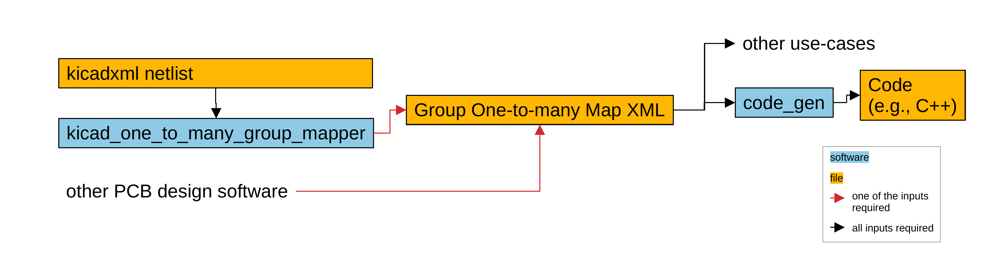
State 2
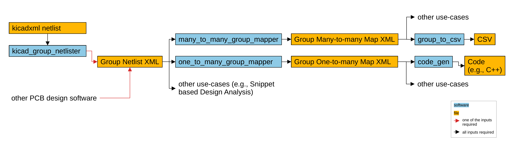
State 3
- Rapid iteration: great
← requirements unknown - Striving for simplicity: great
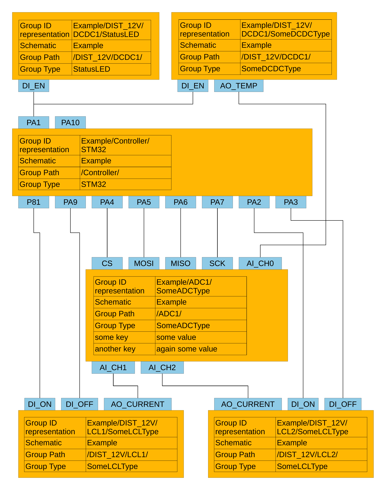
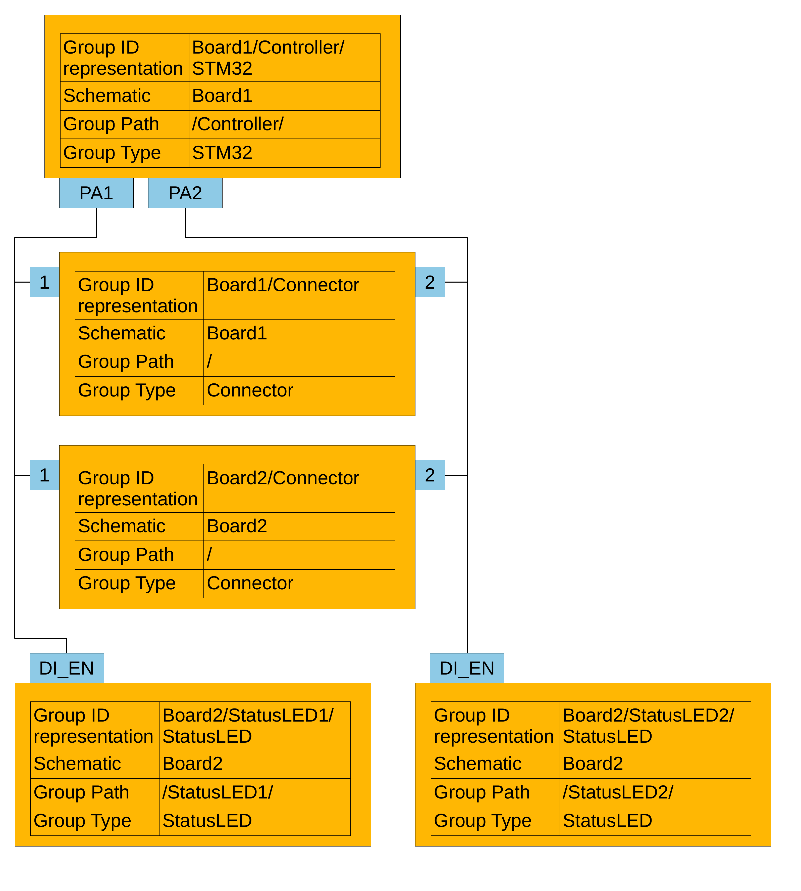